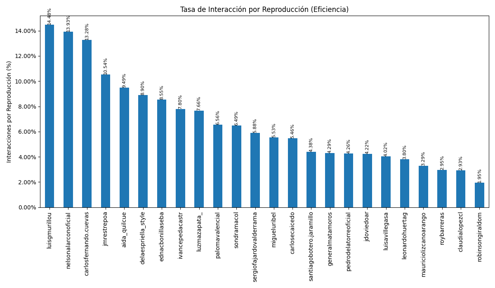
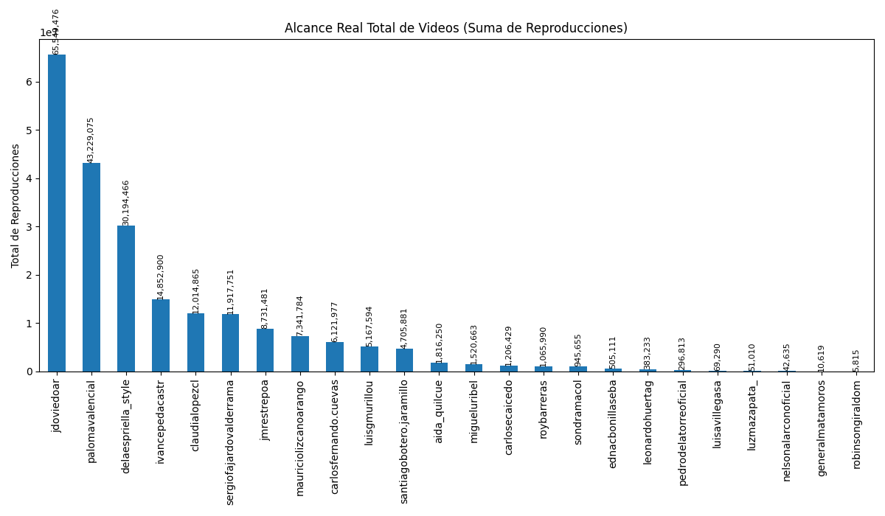
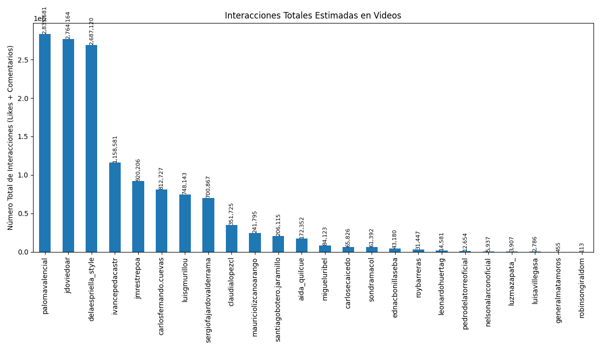

Análisis basado en datos de Instagram en Octubre de 2025



| Candidato | Seguidores | Avg. Engagement Video (Likes) | Avg. Engagement Video (Comentarios) | Avg. Engagement Imagen (Likes) | Avg. Engagement Imagen (Comentarios) | Avg. Engagement Carrusel (Likes) | Avg. Engagement Carrusel (Comentarios) |
|---|---|---|---|---|---|---|---|
| Aida Quilcue | 114,931 | 903.42% | 45.52% | 380.75% | 11.99% | 296.92% | 6.31% |
| Camilo Romero | 186,241 | 816.87% | 34.83% | 601.64% | 15.73% | 538.59% | 12.46% |
| Carlos Caicedo | 63,691 | 483.15% | 62.48% | 42.52% | 4.47% | 79.39% | 7.84% |
| Carlos Fernando Cuevas | 203,412 | 1321.60% | 5.96% | 51.98% | 0.05% | 136.78% | 0.47% |
| Claudia Lopez | 1,004,675 | 262.13% | 30.62% | 8.74% | 0.81% | 10.19% | 0.49% |
| Daniel Palacios | 62,694 | 361.72% | 34.68% | 324.75% | 21.21% | 18.91% | 0.32% |
| Abelardo de la Espriella | 1,093,439 | 831.56% | 58.38% | 369.28% | 9.29% | 320.82% | 9.75% |
| Edna Bonilla | 5,373 | 824.00% | 30.88% | 3402.72% | 105.17% | 605.63% | 16.19% |
| Gustavo Matamoros | 1,880 | 392.62% | 35.89% | 16.13% | 10.75% | 0.00% | 0.00% |
| Ivan Cepeda | 481,230 | 737.49% | 42.55% | 266.99% | 8.72% | 134.36% | 4.23% |
| Juan Daniel Oviedo | 691,425 | 404.69% | 17.00% | 622.45% | 25.48% | 343.26% | 6.07% |
| Jose Manuel Restrepo | 146,593 | 994.57% | 59.32% | 449.86% | 41.53% | 720.09% | 25.22% |
| Leonardo Huerta | 16,763 | 360.75% | 19.74% | 76.15% | 3.74% | 239.01% | 14.12% |
| Luisa Villegas | 664 | 370.11% | 32.05% | 1102.33% | 43.31% | 1489.24% | 210.03% |
| Luis Gilberto Murillo | 83,652 | 1319.30% | 128.47% | 142.19% | 12.43% | 144.30% | 12.44% |
| Luz Maria Zapata | 10,235 | 733.78% | 32.31% | 104.04% | 1.65% | 173.49% | 7.44% |
| Mauricio Lizcano | 69,272 | 299.88% | 29.46% | 48.57% | 2.63% | 63.04% | 3.60% |
| Miguel Uribe Londoño | 138,275 | 515.52% | 37.68% | 365.73% | 11.21% | 1047.75% | 36.75% |
| Nelson Alarcón | 42,381 | 1380.45% | 12.18% | 171.62% | 4.57% | 75.61% | 3.29% |
| Paloma Valencia | 571,449 | 617.80% | 38.14% | 197.62% | 8.64% | 168.84% | 4.59% |
| Pedro de la Torre | 22,429 | 390.49% | 35.87% | 78.87% | 4.19% | 87.72% | 4.66% |
| Felipe Córdoba | 88,390 | 102.57% | 3.35% | 11.54% | 0.68% | 357.79% | 14.26% |
| Robinson Giraldo | 987 | 174.03% | 20.62% | 93.89% | 14.11% | 0.00% | 0.00% |
| Roy Barreras | 205,398 | 254.18% | 40.83% | 6.62% | 1.00% | 11.21% | 1.56% |
| Santiago Botero | 232,442 | 409.89% | 28.10% | 0.00% | 0.00% | 77.17% | 1.88% |
| Sergio Fajardo | 310,388 | 551.38% | 36.71% | 50.67% | 10.47% | 87.08% | 3.74% |
| Sondra Macollins | 92,252 | 389.54% | 259.67% | 18.80% | 13.33% | 22.35% | 11.68% |
| Candidato | Reporte Detallado |
|---|---|
| Abelardo de la Espriella | Ver Análisis |
| Claudia Lopez | Ver Análisis |
| Ivan Cepeda | Ver Análisis |
| Luis Gilberto Murillo | Ver Análisis |
| Mauricio Lizcano | Ver Análisis |
| Paloma Valencia | Ver Análisis |
| Roy Barreras | Ver Análisis |
| Santiago Botero | Ver Análisis |
| Sergio Fajardo | Ver Análisis |
| Sondra Macollins | Ver Análisis |
| Miguel Uribe Londoño | Ver Análisis |
| Aida Quilcue | Ver Análisis |
| Juan Daniel Oviedo | Ver Análisis |
| Jose Manuel Restrepo | Ver Análisis |
| Edna Bonilla | Ver Análisis |
| Leonardo Huerta | Ver Análisis |
| Carlos Fernando Cuevas | Ver Análisis |
| Luisa Villegas | Ver Análisis |
| Luz Maria Zapata | Ver Análisis |
| Gustavo Matamoros | Ver Análisis |
| Robinson Giraldo | Ver Análisis |
| Carlos Caicedo | Ver Análisis |
| Nelson Alarcón | Ver Análisis |
| Pedro de la Torre | Ver Análisis |